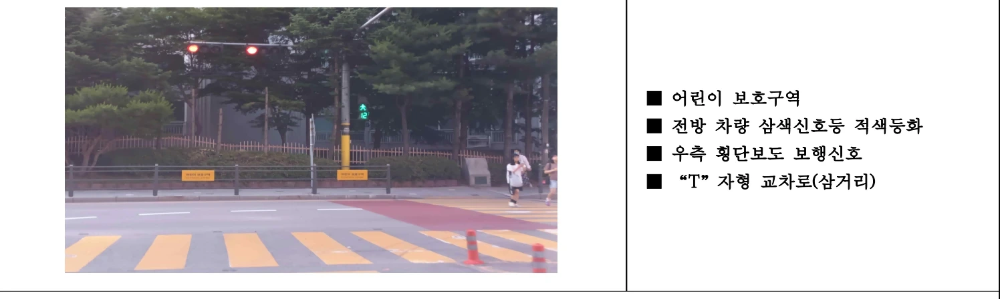

762. Which of the following are the safest ways to drive in the given situation? (Select TWO)

- ①If the traffic light ahead is red and you intend to turn right, you may pass through the crosswalk ahead without stopping.
- ②If the pedestrian signal on the right is green and pedestrians are crossing, stop before the crosswalk if you intend to turn right.
- ③If the pedestrian signal turns red but the pedestrians are still crossing, honk to rush them.
- ④You can turn left regardless of the traffic light as the pedestrian signal on the right is green.
- ⑤Drive with extra caution, as pedestrians may be crossing belatedly.
Show answer
Answer
② If the pedestrian signal on the right is green and pedestrians are crossing, stop before the crosswalk if you intend to turn right.
⑤ Drive with extra caution, as pedestrians may be crossing belatedly.
Reference
In places where crosswalks are installed in child protection zones, you must drive with extra caution for the safety of pedestrians. If you want to turn right at a red three-color traffic light, you can pause before entering the crosswalk in front and then turn right. If there are pedestrians at the pedestrian crossing signal that appears when you turn right, for their safety, you must stop and wait, and must not sound the horn to hurry them across. If you turn left when the traffic light is red, it is a traffic violation.
Reference text is a machine translation for study.